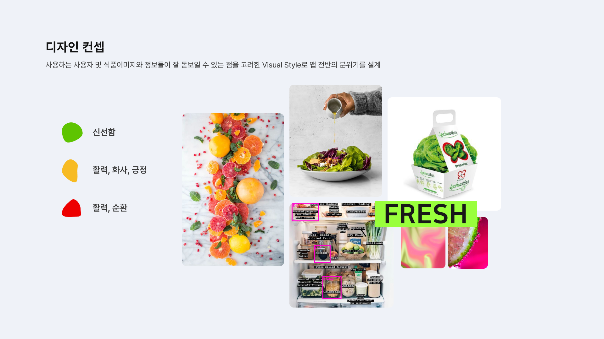
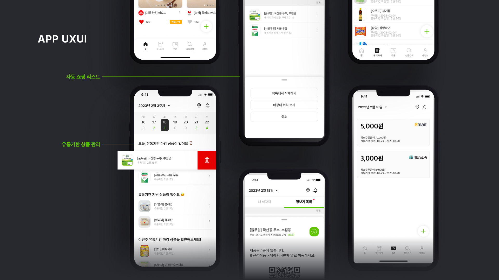

윤지연
Case Study / UX Designer
2016
Introduction
Smart is a service that allows users to make smarter shopping decisions by leveraging IoT technology. My team and I conducted user research and analyzed the results to develop features that enable smarter shopping. Based on those findings, I personally completed the design process.
Smart는 사용자들이 IoT 기술을 활용하여 스마트한 장보기를 할 수 있는 서비스입니다. 팀원들과 함께 사용자 리서치 및 그 결과를 분석하여 스마트한 장보기를 할 수 있는 기능들을 정리했습니다. 그 결과를 가지고 저는 개인적으로 디자인까지 진행을 완료해 보았습니다.
Key Implementations:
UX/UI Design:
Expiration date list, recipe recommendations, mart coupon page, location within the mart, etc.
UX Research and Analysis:
User Diary, 1:1 Interview, Think-Aloud Testing / Ideation using Affinity Diagram and Kano Model
UX/UI 디자인 :
유통기한 리스트, 레시피 추천, 마트 쿠폰함, 마트 내 길 찾기 등
리소스 제작:
사용자 다이어리, 1:1 인터뷰, 생각 말하기 방법 / 어피니티다이어그램과 카노 모델을 활용한 아이데이션
Design
-

-
